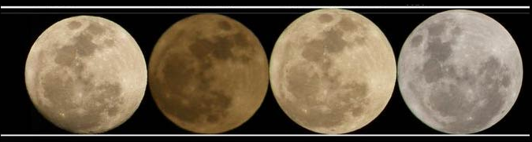

1.002 km/s
367.9200 km/h
-Apogeo: 405.400 km (punto più lontano dalla terra);
-Perigeo: 362.600 km (punto più vicino alla Terra);
-Semi-asse maggiore: 384.748 km;
-Distanza media: 385.000 km;
-Periodo orbita (sidereo): 27 giorni, 7 ore, 43 minuti e 12 secondi;
-Periodo orbita (sinodico): 29 giorni, 6 ore, 28 minuti e 48 secondi;
-Velocità orbitale media: 1.022 km/s.

MOON
-94°ILLUMINATED
18 MARCH
MOON
99% ILLUMINATED
19 MARCH
7 PM-LOW AT HORIZON
MOON
100% ILLUMINATED
19 MARCH
11:50 PM
SUPERMOON TIME
MOON
100% ILLUMINATED
20 MARCH
1 AM
Romantic Satellite
La Luna è un corpo celeste solido e privo di atmosfera. L'assenza di atmosfera consente una visione chiara della sua superficie, che è composta principalmente da tre tipi di strutture: altopiani, mari e crateri.